Recettes salées
Première partie
Confit, garbure, axoa, lamproie, mouclade, farci… La cuisine de Nouvelle-Aquitaine va des fermes du Périgord aux ports basques, des gaves du Béarn aux bouchots des Charentes : chaque plat raconte un pays, ses produits et ses fêtes.
30 recettes
Confit de canard
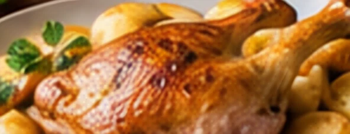
🧺Les ingrédients
- 6cuisses de canard gras
- 60 gde gros sel
- 1 kgde graisse de canard
- 4gousses d'ail en chemise
- 2brins de thym
- 2feuilles de laurier
- 1 c. à c.de poivre en grains concassé
👩🍳La préparation
- Saler : Frottez les cuisses de gros sel mélangé au thym émietté et au poivre. Laissez-les 24 heures au réfrigérateur, dans un plat couvert.
- Rincer : Rincez rapidement les cuisses et essuyez-les soigneusement.
- Confire : Faites fondre la graisse dans une cocotte, plongez-y les cuisses avec l'ail et le laurier : elles doivent être entièrement couvertes. Laissez cuire à très petit frémissement, entre 80 et 90 °C, pendant 2 h 30 à 3 h.
- Vérifier : La viande est cuite quand la pointe d'un couteau s'y enfonce sans aucune résistance.
- Conserver : Rangez les cuisses dans un pot et recouvrez-les entièrement de graisse filtrée : elles se gardent plusieurs semaines au frais.
- Servir : Faites dorer les cuisses côté peau à la poêle, ou 15 minutes au four à 220 °C, jusqu'à ce que la peau soit croustillante.
🍷Les vins d'accompagnement
Pécharmant
AOP Pécharmant · Dordogne (24)
Bergerac rouge
AOP Bergerac · Dordogne (24)
Madiran
AOP Madiran · Béarn et Gers
Pommes de terre sarladaises
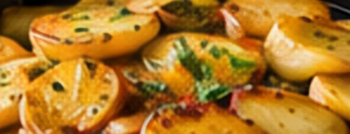
🧺Les ingrédients
- 1,2 kgde pommes de terre à chair ferme
- 4 c. à s.de graisse de canard
- 3gousses d'ail
- 1bouquet de persil plat
- sel, poivre
- facultatif : quelques lamelles de truffe noire
👩🍳La préparation
- Couper : Épluchez les pommes de terre, coupez-les en rondelles de 3 à 4 mm et essuyez-les dans un torchon.
- Saisir : Faites chauffer la graisse dans une grande sauteuse et faites dorer les rondelles 10 minutes à feu vif, en les retournant.
- Cuire : Couvrez, baissez le feu et laissez cuire 20 minutes en remuant de temps en temps.
- Persillade : Hachez ensemble l'ail et le persil. Ajoutez-les 5 minutes avant la fin, découvrez et laissez croustiller. Salez, poivrez.
- Servir : Servez bien chaud, avec un confit ou un magret ; ajoutez la truffe au dernier moment.
🍷Les vins d'accompagnement
Bergerac rouge
AOP Bergerac · Dordogne (24)
Côtes de Duras rouge
AOP Côtes de Duras · Lot-et-Garonne (47)
Montravel rouge
AOP Montravel · Dordogne (24)
Tourin à l'ail
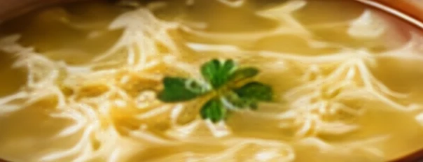
🧺Les ingrédients
- 1tête d'ail (une douzaine de gousses)
- 2 c. à s.de graisse de canard
- 1 c. à s.de farine
- 1,5 lde bouillon de volaille ou d'eau
- 2œufs
- 1 c. à s.de vinaigre de vin
- 4tranches de pain de campagne rassis
- sel, poivre
👩🍳La préparation
- Fondre : Épluchez et émincez l'ail. Faites-le fondre 5 minutes dans la graisse de canard, à feu doux, sans le laisser colorer.
- Singer : Saupoudrez de farine et remuez 1 minute.
- Mouiller : Versez le bouillon chaud en fouettant, salez, poivrez et laissez frémir 20 minutes.
- Tourer : Séparez les blancs des jaunes. Versez les blancs en filet dans la soupe frémissante en remuant : ils forment des filaments.
- Lier : Hors du feu, délayez les jaunes avec le vinaigre et une louche de soupe, puis reversez dans la casserole sans faire bouillir.
- Servir : Versez sur les tranches de pain. À la fin, on « fait chabrot » : un trait de vin rouge dans le fond de l'assiette.
🍷Les vins d'accompagnement
Bergerac rouge
AOP Bergerac · Dordogne (24)
Pécharmant
AOP Pécharmant · Dordogne (24)
Montravel rouge
AOP Montravel · Dordogne (24)
Enchaud de porc
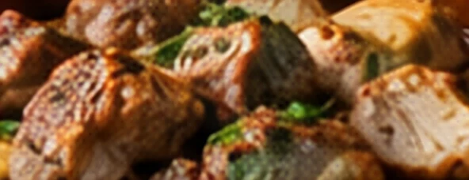
🧺Les ingrédients
- 1,5 kgde filet ou d'échine de porc désossé
- 6gousses d'ail
- 2brins de thym
- 2 c. à s.de graisse de canard
- 20 clde vin blanc sec
- 20 cld'eau
- sel, poivre
👩🍳La préparation
- Piquer : Coupez l'ail en éclats et piquez-en la viande en profondeur.
- Assaisonner : Salez, poivrez, parsemez de thym, roulez et ficelez la viande. Laissez-la reposer une nuit au frais.
- Dorer : Faites dorer la viande sur toutes les faces dans la graisse, en cocotte.
- Cuire : Ajoutez le vin et l'eau, couvrez et enfournez 2 h 30 à 160 °C, en arrosant régulièrement.
- Refroidir : Laissez refroidir dans le jus : il prend en gelée. On sert l'enchaud froid, en tranches, avec sa gelée, ou chaud avec des pommes sarladaises.
🍷Les vins d'accompagnement
Bergerac rouge
AOP Bergerac · Dordogne (24)
Bergerac blanc sec
AOP Bergerac · Dordogne (24)
Côtes de Duras rouge
AOP Côtes de Duras · Lot-et-Garonne (47)
Omelette aux cèpes
🧺Les ingrédients
- 400 gde cèpes frais
- 8œufs
- 2 c. à s.de graisse de canard
- 2gousses d'ail
- quelques brins de persil
- sel, poivre
👩🍳La préparation
- Nettoyer : Brossez les cèpes et essuyez-les avec un linge humide, sans les laver. Émincez-les.
- Poêler : Faites-les sauter dans la graisse chaude 8 à 10 minutes, jusqu'à ce que leur eau soit évaporée et qu'ils soient dorés.
- Persillade : Ajoutez l'ail et le persil hachés, salez, poivrez.
- Battre : Battez les œufs en omelette avec une pincée de sel.
- Cuire : Versez les œufs sur les cèpes, à feu moyen, en ramenant les bords vers le centre. L'omelette doit rester baveuse.
- Servir : Pliez-la en deux et servez aussitôt.
🍷Les vins d'accompagnement
Pécharmant
AOP Pécharmant · Dordogne (24)
Bergerac blanc sec
AOP Bergerac · Dordogne (24)
Montravel rouge
AOP Montravel · Dordogne (24)
Salade périgourdine
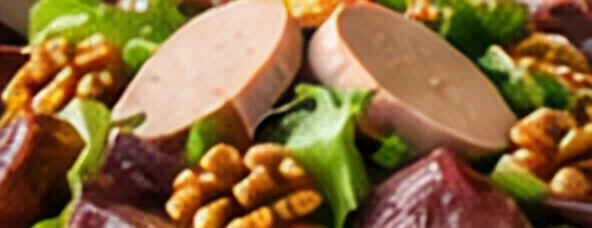
🧺Les ingrédients
- 1salade frisée ou mélange de jeunes pousses
- 200 gde gésiers de canard confits
- 100 gde magret séché en tranches fines
- 80 gde foie gras de canard mi-cuit
- 50 gde cerneaux de noix
- 3 c. à s.d'huile de noix
- 1 c. à s.de vinaigre de vin
- sel, poivre
👩🍳La préparation
- Laver : Lavez et essorez la salade.
- Vinaigrette : Fouettez le vinaigre avec le sel et le poivre, puis l'huile de noix.
- Chauffer : Émincez les gésiers et faites-les réchauffer 5 minutes à la poêle, sans matière grasse.
- Dresser : Répartissez la salade dans les assiettes, puis les gésiers chauds, le magret, le foie gras en lamelles et les noix.
- Servir : Arrosez de vinaigrette au dernier moment.
🍷Les vins d'accompagnement
Bergerac rosé
AOP Bergerac rosé · Dordogne (24)
Monbazillac
AOP Monbazillac · Dordogne (24)
Bergerac blanc sec
AOP Bergerac · Dordogne (24)
Pâté de pommes de terre
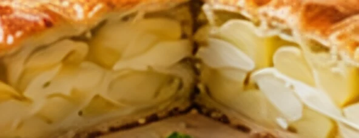
🧺Les ingrédients
- 2pâtes feuilletées ou brisées
- 1 kgde pommes de terre
- 1oignon
- 2gousses d'ail
- un petit bouquet de persil
- 20 clde crème fraîche épaisse
- 1jaune d'œuf
- sel, poivre, muscade
👩🍳La préparation
- Préparer : Épluchez les pommes de terre et coupez-les en lamelles très fines. Hachez l'oignon, l'ail et le persil.
- Foncer : Garnissez un moule de 26 cm avec une pâte, en la laissant déborder.
- Garnir : Alternez les couches de pommes de terre et de hachis, en salant, poivrant et muscadant chaque couche.
- Fermer : Couvrez avec la seconde pâte, soudez les bords, faites une cheminée au centre et dorez au jaune d'œuf.
- Cuire : Enfournez 1 heure à 180 °C. Dix minutes avant la fin, versez la crème par la cheminée.
- Servir : Servez chaud, avec une salade verte.
🍷Les vins d'accompagnement
Vin de Corrèze rouge
IGP Corrèze · Corrèze (19)
Haut-Poitou rouge
AOP Haut-Poitou · Vienne (86)
Bergerac rouge
AOP Bergerac · Dordogne (24)
Farcidures corréziennes
🧺Les ingrédients
- 1 kgde pommes de terre
- 100 gde farine de blé noir (sarrasin)
- 2œufs
- 100 gde ventrèche ou de lard en petits dés
- 1oignon
- 1gousse d'ail
- persil
- 3 c. à s.de graisse de canard ou de porc
- sel, poivre
👩🍳La préparation
- Râper : Épluchez et râpez les pommes de terre crues. Pressez-les fortement dans un torchon pour en extraire l'eau.
- Mélanger : Ajoutez la farine, les œufs, le lard, l'oignon, l'ail et le persil hachés. Salez et poivrez.
- Façonner : Formez des galettes épaisses d'environ 8 cm de diamètre.
- Cuire : Faites-les dorer dans la graisse chaude, 5 à 6 minutes de chaque côté, à feu moyen.
- Variante : Pour les farcidures « boulées », formez des boules et pochez-les 1 heure dans une soupe aux choux.
- Servir : Servez avec une salade ou une soupe.
🍷Les vins d'accompagnement
Vin de Corrèze rouge
IGP Corrèze · Corrèze (19)
Bergerac rouge
AOP Bergerac · Dordogne (24)
Pécharmant
AOP Pécharmant · Dordogne (24)
Mique limousine
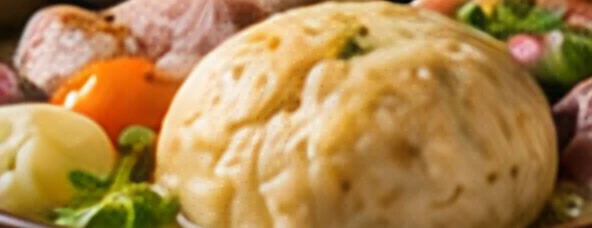
🧺Les ingrédients
- 500 gde farine
- 3œufs
- 20 gde levure de boulanger
- 10 clde lait tiède
- 50 gde beurre ou de graisse de canard fondu
- 1 c. à c.de sel
- 1 kgde petit salé
- 1chou vert
- 4carottes
- 2navets
- 1oignon piqué de clous de girofle
- 1bouquet garni
👩🍳La préparation
- Lancer la potée : Mettez le petit salé dessalé dans un grand faitout d'eau froide avec l'oignon et le bouquet garni. Faites cuire 45 minutes.
- Pâte : Délayez la levure dans le lait tiède. Mélangez la farine, le sel, les œufs, le beurre et le lait, et pétrissez 10 minutes pour obtenir une pâte souple.
- Lever : Formez une boule, couvrez et laissez lever 1 heure dans un endroit tiède.
- Légumes : Ajoutez les légumes à la potée.
- Pocher : Plongez la mique dans le bouillon frémissant et faites-la cuire 45 minutes, en la retournant à mi-cuisson.
- Servir : Coupez la mique en tranches avec un fil ou un couteau, et servez-la avec la viande et les légumes.
🍷Les vins d'accompagnement
Vin de Corrèze rouge
IGP Corrèze · Corrèze (19)
Bergerac rouge
AOP Bergerac · Dordogne (24)
Montravel rouge
AOP Montravel · Dordogne (24)
Boudin aux châtaignes
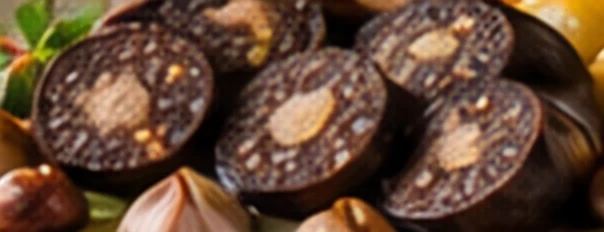
🧺Les ingrédients
- 800 gde boudin noir aux châtaignes
- 400 gde châtaignes cuites (sous vide ou bocal)
- 2pommes reinettes
- 1oignon
- 40 gde beurre
- sel, poivre
👩🍳La préparation
- Piquer : Piquez légèrement le boudin pour éviter qu'il n'éclate.
- Châtaignes : Faites dorer l'oignon émincé et les châtaignes dans la moitié du beurre, 10 minutes.
- Pommes : Coupez les pommes en quartiers et dorez-les dans le reste du beurre, 8 minutes.
- Boudin : Faites cuire le boudin à la poêle, à feu moyen, 10 à 12 minutes en le retournant délicatement.
- Servir : Servez le boudin avec les châtaignes et les pommes.
🍷Les vins d'accompagnement
Vin de Corrèze rouge
IGP Corrèze · Corrèze (19)
Bergerac rouge
AOP Bergerac · Dordogne (24)
Bordeaux supérieur
AOP Bordeaux supérieur · Gironde (33)
Poulet basquaise
🧺Les ingrédients
- 1poulet fermier de 1,6 kg coupé en 8 morceaux
- 2poivrons rouges et 1 poivron vert (ou piments doux)
- 4tomates
- 2oignons
- 3gousses d'ail
- 4tranches de jambon de Bayonne
- 4 c. à s.d'huile d'olive
- 10 clde vin blanc sec
- 1 c. à c.de piment d'Espelette
- 1bouquet garni
- sel
👩🍳La préparation
- Dorer : Faites dorer les morceaux de poulet dans l'huile, sur toutes les faces. Réservez.
- Jambon : Faites revenir rapidement le jambon coupé en lanières. Réservez.
- Piperade : Dans la même cocotte, faites fondre les oignons, l'ail et les poivrons en lanières 15 minutes, puis ajoutez les tomates concassées.
- Mijoter : Remettez le poulet, ajoutez le vin, le piment d'Espelette, le bouquet garni et le sel. Couvrez et laissez mijoter 40 minutes.
- Servir : Ajoutez le jambon 5 minutes avant la fin. Servez avec du riz blanc.
🍷Les vins d'accompagnement
Irouléguy rouge
AOP Irouléguy · Pyrénées-Atlantiques (64)
Irouléguy rosé
AOP Irouléguy · Pyrénées-Atlantiques (64)
Béarn rouge
AOP Béarn · Pyrénées-Atlantiques (64)
Axoa de veau
🧺Les ingrédients
- 1 kgd'épaule de veau
- 2oignons
- 4piments doux d'Anglet (ou poivrons verts)
- 1poivron rouge
- 2gousses d'ail
- 3 c. à s.d'huile
- 1 c. à c.de piment d'Espelette
- 15 clde bouillon
- sel
👩🍳La préparation
- Hacher : Coupez le veau au couteau en tout petits dés : c'est le sens du mot axoa.
- Fondre : Faites fondre les oignons et l'ail hachés dans l'huile.
- Piments : Ajoutez les piments et le poivron en lanières, laissez cuire 10 minutes.
- Saisir : Ajoutez la viande et faites-la revenir à feu vif.
- Mijoter : Ajoutez le piment d'Espelette et le bouillon, couvrez et laissez mijoter 45 minutes à feu doux.
- Servir : Servez avec des pommes de terre vapeur.
🍷Les vins d'accompagnement
Irouléguy rouge
AOP Irouléguy · Pyrénées-Atlantiques (64)
Madiran
AOP Madiran · Béarn et Gers
Béarn rosé
AOP Béarn · Pyrénées-Atlantiques (64)
Piperade basque
🧺Les ingrédients
- 4poivrons verts et rouges (ou piments doux)
- 1 kgde tomates mûres
- 2oignons
- 3gousses d'ail
- 4 c. à s.d'huile d'olive
- 1 c. à c.de piment d'Espelette
- 1pincée de sucre
- 4tranches de jambon de Bayonne
- 4œufs
- sel
👩🍳La préparation
- Monder : Ébouillantez les tomates, pelez-les, épépinez-les et concassez-les.
- Fondre : Faites fondre les oignons et l'ail émincés dans l'huile, puis ajoutez les poivrons en lanières et laissez cuire 15 minutes.
- Mijoter : Ajoutez les tomates, le sucre, le piment d'Espelette et le sel. Laissez cuire 20 minutes à découvert.
- Jambon : Faites griller rapidement les tranches de jambon à la poêle.
- Œufs : Cassez les œufs sur la piperade, couvrez et laissez cuire 3 à 4 minutes, ou brouillez-les dans les légumes.
- Servir : Servez avec le jambon et du pain de campagne.
🍷Les vins d'accompagnement
Irouléguy rosé
AOP Irouléguy · Pyrénées-Atlantiques (64)
Irouléguy blanc
AOP Irouléguy · Pyrénées-Atlantiques (64)
Béarn rosé
AOP Béarn · Pyrénées-Atlantiques (64)
Ttoro, soupe de poissons
🧺Les ingrédients
- 1 kgde têtes et arêtes de poissons
- 1poireau
- 1oignon
- 2 ld'eau
- 1,5 kgde poissons (merlu, lotte, grondin, congre)
- 500 gde moules
- 6langoustines
- 1oignon
- 1poivron vert
- 3tomates
- 4gousses d'ail
- 10 clde vin blanc sec
- 6 c. à s.d'huile d'olive
- 1 c. à c.de piment d'Espelette
- farine, persil, pain grillé
👩🍳La préparation
- Fumet : Faites cuire les têtes et arêtes avec le poireau et l'oignon dans 2 litres d'eau, 30 minutes. Filtrez.
- Base : Faites revenir l'oignon, l'ail et le poivron dans l'huile, ajoutez les tomates, le vin, le fumet et le piment. Laissez cuire 20 minutes, puis mixez et passez.
- Poissons : Coupez les poissons en tronçons, farinez-les et faites-les dorer à la poêle.
- Moules : Ouvrez les moules à feu vif dans une casserole couverte.
- Réunir : Plongez les poissons, les langoustines et les moules dans la soupe et laissez frémir 5 minutes.
- Servir : Servez sur des tranches de pain grillé frottées d'ail, avec du persil haché.
🍷Les vins d'accompagnement
Irouléguy blanc
AOP Irouléguy · Pyrénées-Atlantiques (64)
Jurançon sec
AOP Jurançon · Pyrénées-Atlantiques (64)
Béarn rosé
AOP Béarn · Pyrénées-Atlantiques (64)
Chipirons à l'encre
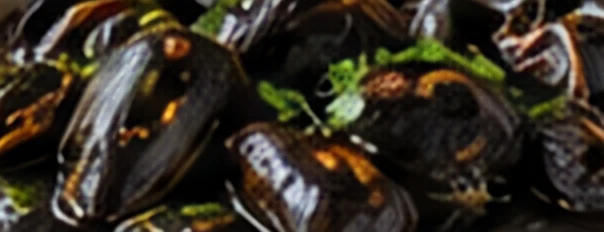
🧺Les ingrédients
- 1 kgde petits calmars (chipirons)
- 2sachets d'encre de seiche (8 g)
- 2oignons
- 3gousses d'ail
- 2tomates
- 10 clde vin blanc sec
- 3 c. à s.d'huile d'olive
- 1pincée de piment d'Espelette
- sel, riz blanc pour servir
👩🍳La préparation
- Nettoyer : Videz les chipirons, retirez la plume et la peau, gardez les tentacules. Rincez et séchez.
- Saisir : Faites-les sauter 2 minutes à feu vif dans l'huile. Réservez.
- Fondre : Faites fondre les oignons et l'ail hachés 15 minutes, puis ajoutez les tomates concassées.
- Encre : Délayez l'encre dans le vin blanc et versez dans la sauce.
- Mijoter : Remettez les chipirons, ajoutez le piment et le sel, et laissez mijoter 30 minutes à feu doux.
- Servir : Servez avec du riz blanc.
🍷Les vins d'accompagnement
Irouléguy blanc
AOP Irouléguy · Pyrénées-Atlantiques (64)
Jurançon sec
AOP Jurançon · Pyrénées-Atlantiques (64)
Irouléguy rouge
AOP Irouléguy · Pyrénées-Atlantiques (64)
Garbure béarnaise
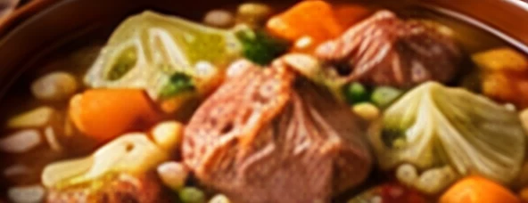
🧺Les ingrédients
- 1chou vert
- 500 gde haricots blancs secs, trempés une nuit
- 500 gde pommes de terre
- 3carottes
- 2navets
- 2poireaux
- 1oignon
- 3gousses d'ail
- 300 gde ventrèche ou un talon de jambon de Bayonne
- 4cuisses de canard confites
- 1bouquet garni
- 3 ld'eau
- sel, poivre, pain de campagne
👩🍳La préparation
- Haricots : Faites cuire les haricots trempés 1 heure à l'eau non salée.
- Bouillon : Dans un grand faitout, mettez l'eau, le jambon, l'oignon, l'ail et le bouquet garni. Laissez cuire 30 minutes.
- Légumes : Ajoutez les légumes en morceaux, sauf le chou, et les haricots égouttés. Laissez cuire 1 heure.
- Chou et confit : Ajoutez le chou en lanières, blanchi 5 minutes, et les cuisses de confit. Laissez cuire encore 45 minutes.
- Épaisseur : La garbure doit être épaisse : on dit que la cuillère doit y tenir debout.
- Servir : Versez sur des tranches de pain. Finissez l'assiette en faisant chabrot, avec un trait de vin rouge.
🍷Les vins d'accompagnement
Madiran
AOP Madiran · Béarn et Gers
Béarn rouge
AOP Béarn · Pyrénées-Atlantiques (64)
Irouléguy rouge
AOP Irouléguy · Pyrénées-Atlantiques (64)
Poule au pot
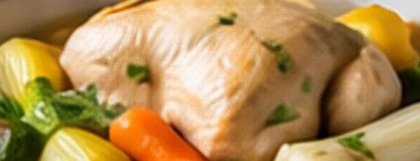
🧺Les ingrédients
- 1poule fermière de 2 kg
- 6carottes
- 4navets
- 4poireaux
- 1branche de céleri
- 1oignon piqué de 2 clous de girofle
- 1bouquet garni
- gros sel, poivre
- 250 gde chair à saucisse
- 100 gde jambon de Bayonne haché
- 1foie de la poule
- 100 gde mie de pain trempée dans du lait
- 2œufs
- 2gousses d'ail
- persil
👩🍳La préparation
- Farce : Hachez et mélangez tous les ingrédients de la farce. Salez et poivrez.
- Farcir : Remplissez la poule de farce et cousez l'ouverture.
- Pocher : Mettez la poule dans un grand faitout, couvrez d'eau froide, portez à frémissement et écumez.
- Cuire : Ajoutez l'oignon, le bouquet garni et le sel, et laissez cuire 1 h 30 à petit frémissement.
- Légumes : Ajoutez les légumes et poursuivez la cuisson 1 heure.
- Servir : Servez d'abord le bouillon, puis la poule découpée, la farce en tranches et les légumes, avec du gros sel et des cornichons.
🍷Les vins d'accompagnement
Béarn rouge
AOP Béarn · Pyrénées-Atlantiques (64)
Jurançon sec
AOP Jurançon · Pyrénées-Atlantiques (64)
Madiran
AOP Madiran · Béarn et Gers
Jurançonnaise de truite
🧺Les ingrédients
- 4truites portion, vidées
- 2échalotes
- 20 clde Jurançon sec
- 20 clde crème fraîche
- 40 gde beurre
- 2 c. à s.de farine
- persil ou ciboulette
- sel, poivre
👩🍳La préparation
- Préparer : Salez et poivrez les truites, puis farinez-les légèrement.
- Dorer : Faites-les dorer au beurre, 4 minutes de chaque côté. Réservez au chaud.
- Sauce : Faites fondre les échalotes hachées, déglacez au Jurançon et faites réduire de moitié.
- Napper : Ajoutez la crème et laissez réduire 5 minutes jusqu'à ce que la sauce soit nappante.
- Servir : Nappez les truites de sauce et parsemez d'herbes.
🍷Les vins d'accompagnement
Jurançon sec
AOP Jurançon · Pyrénées-Atlantiques (64)
Béarn blanc
AOP Béarn · Pyrénées-Atlantiques (64)
Irouléguy blanc
AOP Irouléguy · Pyrénées-Atlantiques (64)
Salade landaise
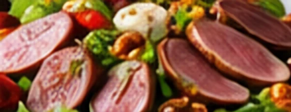
🧺Les ingrédients
- 1salade (frisée ou feuille de chêne)
- 150 gde gésiers de canard confits
- 100 gde magret fumé en tranches
- 100 gde foie gras de canard
- 2tomates
- 2 c. à s.de pignons de pin
- 1échalote
- 3 c. à s.d'huile
- 1 c. à s.de vinaigre de vin
- sel, poivre
👩🍳La préparation
- Laver : Lavez et essorez la salade. Coupez les tomates en quartiers.
- Pignons : Faites dorer les pignons à sec dans une poêle.
- Gésiers : Émincez les gésiers et faites-les revenir 5 minutes.
- Vinaigrette : Mélangez l'échalote hachée, le vinaigre, le sel, le poivre et l'huile.
- Dresser : Disposez la salade, les tomates, les gésiers chauds, le magret, le foie gras en lamelles et les pignons. Arrosez de vinaigrette.
🍷Les vins d'accompagnement
Tursan rosé
AOP Tursan · Landes (40)
Tursan blanc
AOP Tursan · Landes (40)
Bergerac rosé
AOP Bergerac rosé · Dordogne (24)
Magret de canard grillé
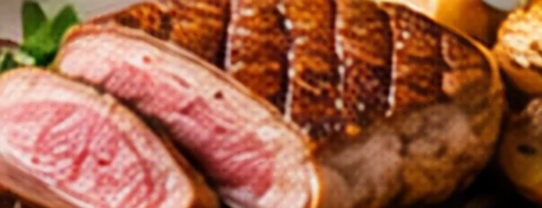
🧺Les ingrédients
- 2magrets de canard d'environ 400 g
- fleur de sel
- poivre du moulin
- 2échalotes (facultatif)
👩🍳La préparation
- Quadriller : Incisez la peau des magrets en croisillons, sans entailler la chair.
- Peau : Faites cuire les magrets côté peau, dans une poêle sans matière grasse, 8 à 10 minutes à feu moyen. Videz la graisse au fur et à mesure (gardez-la pour les pommes de terre).
- Chair : Retournez-les et faites cuire 3 à 4 minutes côté chair pour une viande rosée.
- Reposer : Laissez reposer 5 minutes sous une feuille d'aluminium.
- Servir : Tranchez, salez à la fleur de sel et poivrez. Au barbecue, on les grille traditionnellement sur des sarments de vigne.
🍷Les vins d'accompagnement
Tursan rouge
AOP Tursan · Landes (40)
Madiran
AOP Madiran · Béarn et Gers
Pécharmant
AOP Pécharmant · Dordogne (24)
Entrecôte à la bordelaise
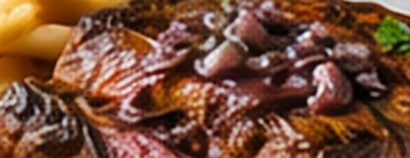
🧺Les ingrédients
- 2entrecôtes épaisses de 500 g (bœuf de Bazas ou limousin)
- 2os à moelle
- fleur de sel, poivre
- 4échalotes
- 30 clde vin rouge de Bordeaux
- 15 clde fond de veau
- 60 gde beurre
- 1brin de thym
- 1feuille de laurier
👩🍳La préparation
- Sauce : Faites fondre les échalotes hachées dans 20 g de beurre, versez le vin, ajoutez le thym et le laurier et faites réduire des trois quarts.
- Lier : Ajoutez le fond de veau, laissez réduire 10 minutes, filtrez et incorporez le reste du beurre en morceaux, hors du feu.
- Moelle : Extrayez la moelle des os, coupez-la en rondelles et pochez-la 2 minutes dans de l'eau salée frémissante.
- Griller : Faites griller les entrecôtes 3 à 4 minutes de chaque côté pour une cuisson saignante, idéalement sur des sarments de vigne.
- Servir : Laissez reposer la viande 5 minutes, nappez de sauce, disposez la moelle et servez avec des frites ou des cèpes.
🍷Les vins d'accompagnement
Saint-Émilion
AOP Saint-Émilion · Gironde (33)
Pauillac
AOP Pauillac · Gironde (33)
Bordeaux supérieur
AOP Bordeaux supérieur · Gironde (33)
Lamproie à la bordelaise
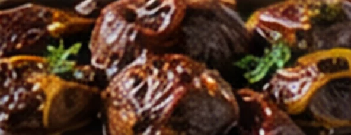
🧺Les ingrédients
- 1lamproie de 1,5 kg (demandez-la préparée à votre poissonnier)
- 1,5 lde vin rouge de Bordeaux
- 8blancs de poireaux
- 200 gde jambon de Bayonne en dés
- 2oignons
- 4gousses d'ail
- 2 c. à s.de farine
- 4 c. à s.d'huile
- 1bouquet garni
- sel, poivre, croûtons frottés d'ail
👩🍳La préparation
- Préparer : Ébouillantez la lamproie pour retirer le limon, ôtez le cartilage dorsal et coupez-la en tronçons. Réservez le sang avec un peu de vin, s'il a été recueilli.
- Poireaux : Faites revenir les poireaux en tronçons dans l'huile, sans coloration. Réservez.
- Sauce : Faites dorer les oignons et le jambon, saupoudrez de farine, mouillez avec le vin, ajoutez l'ail et le bouquet garni. Laissez cuire 30 minutes.
- Mijoter : Ajoutez la lamproie et les poireaux et laissez mijoter 1 h 30 à feu très doux.
- Lier : Hors du feu, liez la sauce avec le sang réservé, sans faire bouillir.
- Servir : Servez avec des croûtons frottés d'ail. La lamproie se trouve aussi toute cuisinée, en bocal.
🍷Les vins d'accompagnement
Saint-Émilion
AOP Saint-Émilion · Gironde (33)
Graves rouge
AOP Graves · Gironde (33)
Côtes de Bourg
AOP Côtes de Bourg · Gironde (33)
Grenier médocain
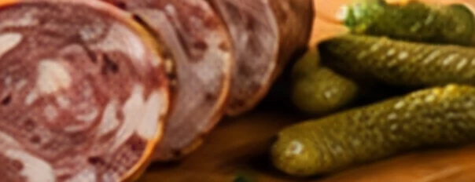
🧺Les ingrédients
- 1panse de porc nettoyée (environ 1,5 kg)
- 80 gde gros sel
- 6gousses d'ail
- 2 c. à s.de poivre concassé
- 75 clde vin blanc sec
- 2carottes
- 1oignon
- 1bouquet garni
- cornichons pour servir
👩🍳La préparation
- Assaisonner : Grattez la panse, frottez-la de gros sel, d'ail haché et de poivre. Laissez-la reposer 24 heures au frais.
- Rouler : Roulez-la très serrée et ficelez-la comme un saucisson.
- Court-bouillon : Préparez un court-bouillon avec de l'eau, le vin blanc, les carottes, l'oignon et le bouquet garni.
- Cuire : Faites cuire le grenier 4 heures à petit frémissement.
- Presser : Laissez-le refroidir dans son bouillon, puis sous un poids, une nuit au frais.
- Servir : Servez froid, en tranches très fines, avec des cornichons et du pain de campagne.
🍷Les vins d'accompagnement
Médoc
AOP Médoc · Gironde (33)
Haut-Médoc
AOP Haut-Médoc · Gironde (33)
Bordeaux clairet
AOP Bordeaux clairet · Gironde (33)
Mouclade charentaise
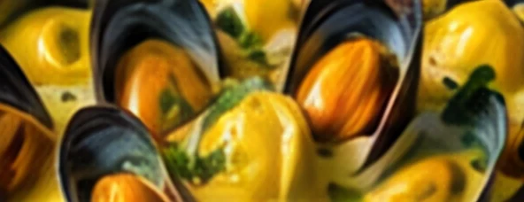
🧺Les ingrédients
- 2 lde moules de bouchot
- 2échalotes
- 1gousse d'ail
- 15 clde vin blanc sec
- 25 clde crème fraîche
- 2jaunes d'œufs
- 1 c. à c.de curry (ou une pincée de safran)
- 30 gde beurre
- persil
👩🍳La préparation
- Laver : Grattez et lavez les moules, en éliminant celles qui sont ouvertes.
- Ouvrir : Faites-les ouvrir à feu vif 5 minutes avec le vin blanc et les échalotes. Filtrez le jus.
- Décoquiller : Retirez une coquille de chaque moule et disposez-les dans un plat.
- Sauce : Faites fondre l'ail dans le beurre, ajoutez le curry, le jus filtré et la crème, et faites réduire. Hors du feu, liez avec les jaunes d'œufs.
- Servir : Nappez les moules de sauce, parsemez de persil et passez 2 minutes sous le gril.
🍷Les vins d'accompagnement
Charentais blanc
IGP Charentais · Charente-Maritime (17)
Entre-deux-Mers
AOP Entre-deux-Mers · Gironde (33)
Pineau des Charentes blanc
AOP Pineau des Charentes · Charentes
Éclade de moules
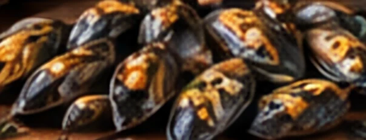
🧺Les ingrédients
- 2 kgde moules de bouchot de taille moyenne
- un grand seau d'aiguilles de pin sèches
- 1planche épaisse (non traitée)
- pain de campagne et beurre salé
👩🍳La préparation
- Laver : Grattez et lavez les moules, puis égouttez-les bien.
- Disposer : Au centre de la planche, plantez quelques clous, puis disposez les moules debout, serrées en rosace, charnière vers le haut, pour que les cendres n'y entrent pas.
- Couvrir : Recouvrez d'une épaisse couche d'aiguilles de pin, d'une vingtaine de centimètres.
- Brûler : Mettez le feu aux aiguilles, en plein air, loin de toute végétation et jamais en période de sécheresse : il brûle 3 à 5 minutes.
- Éventer : Chassez les cendres en éventant avec un carton.
- Servir : Mangez aussitôt, avec du pain et du beurre salé.
🍷Les vins d'accompagnement
Charentais blanc
IGP Charentais · Charente-Maritime (17)
Entre-deux-Mers
AOP Entre-deux-Mers · Gironde (33)
Bordeaux rosé
AOP Bordeaux rosé · Gironde (33)
Grillon charentais
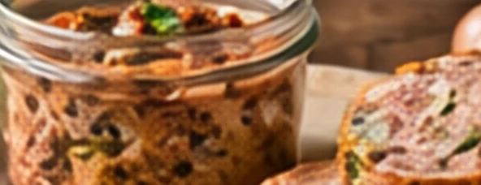
🧺Les ingrédients
- 1 kgd'échine de porc
- 500 gde poitrine fraîche
- 300 gde saindoux
- 15 clde vin blanc sec
- 2gousses d'ail
- 2clous de girofle
- thym, laurier
- 20 gde sel
- poivre
👩🍳La préparation
- Couper : Coupez la viande en gros cubes.
- Fondre : Faites fondre le saindoux dans une cocotte et faites colorer légèrement la viande.
- Cuire : Ajoutez le vin, l'ail, les aromates, le sel et le poivre. Couvrez et laissez cuire 4 heures à feu très doux, en remuant de temps en temps.
- Effilocher : Écrasez la viande à la fourchette en gardant des morceaux : le grillon est plus rustique que les rillettes.
- Mettre en pots : Remplissez des pots, couvrez de graisse et laissez refroidir.
- Servir : Servez sur du pain grillé, à l'apéritif, avec un verre de pineau.
🍷Les vins d'accompagnement
Pineau des Charentes rouge
AOP Pineau des Charentes · Charentes
Charentais rouge
IGP Charentais · Charente (16)
Bordeaux clairet
AOP Bordeaux clairet · Gironde (33)
Cagouilles à la charentaise
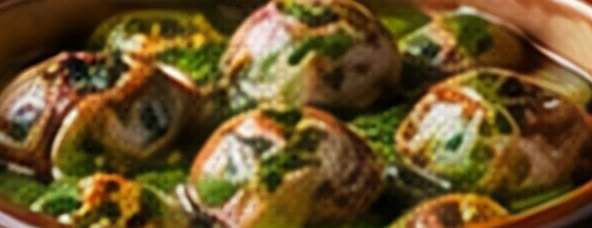
🧺Les ingrédients
- 48escargots petits-gris (préparés ou en bocal)
- 150 gde chair à saucisse
- 100 gde jambon de pays en dés
- 2échalotes
- 3gousses d'ail
- 1 c. à s.de farine
- 25 clde vin blanc sec
- 25 clde bouillon
- 1bouquet garni
- persil, sel, poivre, une pointe de piment
👩🍳La préparation
- Rincer : Rincez et égouttez les escargots.
- Revenir : Faites revenir la chair à saucisse et le jambon, puis les échalotes et l'ail hachés.
- Singer : Saupoudrez de farine et remuez.
- Mouiller : Ajoutez le vin, le bouillon et le bouquet garni.
- Mijoter : Ajoutez les escargots et laissez mijoter 1 heure à 1 h 30 à feu doux.
- Servir : Parsemez de persil, assaisonnez et servez avec du pain pour saucer.
🍷Les vins d'accompagnement
Charentais rouge
IGP Charentais · Charente (16)
Bordeaux supérieur
AOP Bordeaux supérieur · Gironde (33)
Charentais blanc
IGP Charentais · Charente-Maritime (17)
Farci poitevin
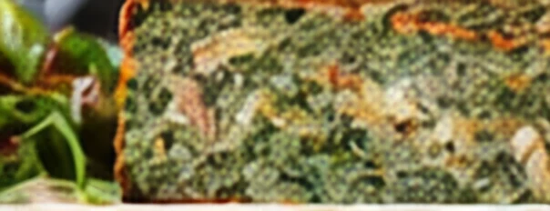
🧺Les ingrédients
- 1chou vert
- 500 gde verdure : bettes, oseille, épinards, vert de poireau, salade
- 250 gde lard gras ou de ventrèche en dés
- 200 gde mie de pain trempée dans du lait
- 4œufs
- 2oignons
- 3gousses d'ail
- persil, ciboulette
- sel, poivre
- un filet à farci ou un torchon, du bouillon
👩🍳La préparation
- Blanchir : Blanchissez les grandes feuilles du chou 5 minutes. Réservez-les.
- Hacher : Hachez le reste du chou, les verdures, les herbes, les oignons et l'ail.
- Mélanger : Ajoutez le lard, la mie de pain pressée et les œufs. Salez, poivrez.
- Envelopper : Tapissez le filet de grandes feuilles de chou, remplissez de farce et refermez en boule.
- Cuire : Faites cuire 3 heures dans un bouillon frémissant, avec du petit salé si vous le souhaitez.
- Servir : Servez chaud en tranches, ou froid, en tranches poêlées le lendemain.
🍷Les vins d'accompagnement
Haut-Poitou rouge
AOP Haut-Poitou · Vienne (86)
Haut-Poitou blanc
AOP Haut-Poitou · Vienne (86)
Saumur rouge
AOP Saumur · Maine-et-Loire (49)
Tourteau de pommes de terre poitevin
🧺Les ingrédients
- 2pâtes brisées
- 800 gde pommes de terre
- 150 gde lardons
- 1oignon
- 150 gde chabichou du Poitou (ou fromage de chèvre)
- 20 clde crème fraîche
- 1jaune d'œuf
- persil, sel, poivre
👩🍳La préparation
- Préparer : Coupez les pommes de terre en fines lamelles. Faites revenir les lardons et l'oignon émincé.
- Foncer : Garnissez un moule de 24 cm avec une pâte.
- Garnir : Alternez les pommes de terre, les lardons, le chèvre émietté et le persil. Salez peu, poivrez.
- Fermer : Couvrez avec la seconde pâte, soudez, faites une cheminée et dorez au jaune.
- Cuire : Enfournez 1 heure à 180 °C ; versez la crème par la cheminée 10 minutes avant la fin.
- Servir : Servez chaud avec une salade.
🍷Les vins d'accompagnement
Haut-Poitou rouge
AOP Haut-Poitou · Vienne (86)
Haut-Poitou blanc
AOP Haut-Poitou · Vienne (86)
Charentais rouge
IGP Charentais · Charente (16)
Broyé salé du Poitou
🧺Les ingrédients
- 300 gde farine
- 200 gde beurre demi-sel AOP Charentes-Poitou, mou
- 1œuf et 1 jaune pour dorer
- 120 gde chabichou du Poitou bien sec, émietté
- 60 gde cerneaux de noix concassés
- 1 c. à c.de thym
- poivre
👩🍳La préparation
- Sabler : Mélangez du bout des doigts la farine et le beurre.
- Assembler : Ajoutez l'œuf, le fromage, les noix, le thym et le poivre. Formez une boule sans trop travailler la pâte.
- Étaler : Étalez-la en un disque de 2 cm d'épaisseur dans un moule de 26 cm.
- Décorer : Dorez au jaune d'œuf et tracez des croisillons à la fourchette.
- Cuire : Enfournez 30 à 35 minutes à 180 °C.
- Servir : Servez tiède à l'apéritif : comme le broyé sucré, on le casse d'un coup de poing au centre.
🍷Les vins d'accompagnement
Haut-Poitou blanc
AOP Haut-Poitou · Vienne (86)
Pineau des Charentes blanc
AOP Pineau des Charentes · Charentes
Charentais blanc
IGP Charentais · Charente-Maritime (17)
Recettes sucrées
Deuxième partie
Clafoutis, gâteau basque, cannelés, pastis, broyé, tourteau fromager… Des gâteaux de fête et des douceurs de tous les jours, nés dans les fours de village, les couvents et les pâtisseries de la région.
30 recettes
Clafoutis aux cerises

🧺Les ingrédients
- 500 gde cerises noires, non dénoyautées
- 100 gde farine
- 100 gde sucre
- 4œufs
- 40 clde lait entier
- 30 gde beurre fondu, plus pour le moule
- 1pincée de sel
- sucre glace
👩🍳La préparation
- Moule : Beurrez un plat à gratin et répartissez-y les cerises lavées et équeutées. On ne les dénoyaute pas : les noyaux parfument le clafoutis d'un léger goût d'amande.
- Pâte : Fouettez les œufs avec le sucre, ajoutez la farine et le sel, puis le lait et le beurre fondu.
- Verser : Versez la pâte sur les cerises.
- Cuire : Enfournez 40 minutes à 180 °C, jusqu'à ce que le clafoutis soit doré.
- Servir : Servez tiède, saupoudré de sucre glace.
🍷Les vins d'accompagnement
Pineau des Charentes rosé
AOP Pineau des Charentes · Charentes
Monbazillac
AOP Monbazillac · Dordogne (24)
Vin paillé de Corrèze
IGP Corrèze · Corrèze (19)
Flaugnarde aux pommes

🧺Les ingrédients
- 4pommes reinettes
- 30 gde beurre
- 100 gde farine
- 100 gde sucre
- 4œufs
- 50 clde lait
- 1sachet de sucre vanillé
- 2 c. à s.d'eau-de-vie de prune ou de rhum
- 1pincée de sel
👩🍳La préparation
- Pommes : Pelez les pommes, coupez-les en lamelles et faites-les dorer 5 minutes au beurre.
- Pâte : Fouettez les œufs, les sucres, la farine et le sel, puis ajoutez le lait et l'eau-de-vie.
- Assembler : Disposez les pommes dans un plat beurré et versez la pâte par-dessus.
- Cuire : Enfournez 40 minutes à 180 °C : la flaugnarde gonfle, puis retombe en sortant du four.
- Servir : Servez tiède ou froide.
🍷Les vins d'accompagnement
Monbazillac
AOP Monbazillac · Dordogne (24)
Pineau des Charentes blanc
AOP Pineau des Charentes · Charentes
Vin paillé de Corrèze
IGP Corrèze · Corrèze (19)
Gâteau creusois aux noisettes

🧺Les ingrédients
- 4blancs d'œufs
- 150 gde sucre
- 125 gde poudre de noisettes
- 60 gde farine
- 125 gde beurre fondu, tiède
- 1pincée de sel
👩🍳La préparation
- Blancs : Montez les blancs en neige ferme avec le sel, en ajoutant le sucre en pluie à la fin.
- Incorporer : Mélangez délicatement la farine et la poudre de noisettes aux blancs, avec une spatule.
- Beurre : Ajoutez le beurre fondu tiède, en soulevant la pâte.
- Cuire : Versez dans un moule de 24 cm beurré et enfournez 30 à 35 minutes à 180 °C.
- Servir : Laissez refroidir avant de démouler. Il se garde plusieurs jours.
🍷Les vins d'accompagnement
Vin paillé de Corrèze
IGP Corrèze · Corrèze (19)
Monbazillac
AOP Monbazillac · Dordogne (24)
Saussignac
AOP Saussignac · Dordogne (24)
Madeleines de Saint-Yrieix

🧺Les ingrédients
- 3œufs
- 130 gde sucre
- 150 gde farine
- 1 c. à c.de levure chimique
- 125 gde beurre fondu
- 1 c. à s.de miel
- 1zeste de citron
👩🍳La préparation
- Blanchir : Fouettez les œufs et le sucre jusqu'à ce que le mélange blanchisse.
- Assembler : Ajoutez la farine et la levure, puis le beurre fondu, le miel et le zeste.
- Reposer : Laissez reposer la pâte au moins 1 heure au réfrigérateur : le choc de température fera gonfler la bosse.
- Mouler : Remplissez aux trois quarts des moules à madeleines beurrés et farinés.
- Cuire : Enfournez 4 minutes à 220 °C, puis 6 minutes à 180 °C.
- Servir : Démoulez aussitôt et laissez refroidir sur une grille.
🍷Les vins d'accompagnement
Pineau des Charentes blanc
AOP Pineau des Charentes · Charentes
Monbazillac
AOP Monbazillac · Dordogne (24)
Vin paillé de Corrèze
IGP Corrèze · Corrèze (19)
Treipaïs

🧺Les ingrédients
- 4œufs
- 120 gde sucre
- 100 gde poudre de noisettes
- 40 gde farine
- 250 gde crème de marrons
- 100 gde beurre mou
- 150 gde chocolat noir
- 15 clde crème liquide
- 50 gde noisettes concassées et grillées
👩🍳La préparation
- Biscuit : Fouettez les jaunes et la moitié du sucre, ajoutez la poudre de noisettes et la farine, puis les blancs montés en neige avec le reste du sucre. Étalez sur une plaque et cuisez 12 minutes à 180 °C.
- Couper : Coupez le biscuit refroidi en trois rectangles égaux.
- Crème : Fouettez le beurre mou avec la crème de marrons.
- Ganache : Versez la crème chaude sur le chocolat haché et mélangez jusqu'à ce qu'elle soit lisse.
- Monter : Alternez biscuit, crème de marrons, biscuit, ganache, biscuit, et terminez par la ganache et les noisettes.
- Reposer : Laissez prendre 3 heures au réfrigérateur avant de couper en parts.
🍷Les vins d'accompagnement
Vin paillé de Corrèze
IGP Corrèze · Corrèze (19)
Rosette
AOP Rosette · Dordogne (24)
Cognac VSOP, en digestif
AOC Cognac · Charentes
Corrézien aux noix

🧺Les ingrédients
- 180 gde cerneaux de noix
- 150 gde sucre
- 3œufs
- 125 gde beurre mou
- 80 gde farine
- 1/2sachet de levure chimique
- 2 c. à s.de liqueur de noix ou de rhum
👩🍳La préparation
- Noix : Mixez 150 g de noix en poudre ; concassez le reste.
- Crémer : Travaillez le beurre et le sucre en crème, puis ajoutez les œufs un à un.
- Assembler : Incorporez la farine, la levure, la poudre de noix et la liqueur.
- Cuire : Versez dans un moule de 22 cm beurré, parsemez de noix concassées et enfournez 40 minutes à 170 °C.
- Servir : Servez froid, avec une crème anglaise.
🍷Les vins d'accompagnement
Vin paillé de Corrèze
IGP Corrèze · Corrèze (19)
Monbazillac
AOP Monbazillac · Dordogne (24)
Rosette
AOP Rosette · Dordogne (24)
Gâteau aux noix du Périgord

🧺Les ingrédients
- 200 gde cerneaux de noix du Périgord
- 150 gde sucre
- 4œufs
- 125 gde beurre fondu
- 50 gde farine
- 1 c. à s.de miel
- 80 gde chocolat noir
- 30 gde beurre
- quelques cerneaux pour décorer
👩🍳La préparation
- Noix : Mixez les noix en poudre grossière.
- Pâte : Fouettez les œufs, le sucre et le miel, ajoutez la farine, les noix puis le beurre fondu.
- Cuire : Versez dans un moule de 24 cm beurré et enfournez 30 à 35 minutes à 170 °C.
- Glacer : Faites fondre le chocolat avec le beurre et nappez le gâteau refroidi.
- Décorer : Disposez quelques cerneaux sur le glaçage avant qu'il ne prenne.
🍷Les vins d'accompagnement
Monbazillac
AOP Monbazillac · Dordogne (24)
Saussignac
AOP Saussignac · Dordogne (24)
Rosette
AOP Rosette · Dordogne (24)
Tarte aux noix du Périgord

🧺Les ingrédients
- 250 gde farine
- 125 gde beurre
- 80 gde sucre
- 1œuf
- 1pincée de sel
- 200 gde cerneaux de noix
- 150 gde sucre
- 20 clde crème liquide
- 50 gde beurre
- 2 c. à s.de miel
👩🍳La préparation
- Pâte : Sablez la farine, le beurre et le sucre, ajoutez l'œuf et le sel, et laissez reposer 30 minutes.
- Foncer : Étalez la pâte dans un moule de 26 cm et faites-la cuire à blanc 15 minutes à 180 °C.
- Caramel : Faites un caramel à sec avec le sucre, ajoutez le beurre, puis la crème chaude et le miel.
- Garnir : Mélangez les noix au caramel et versez sur le fond de tarte.
- Cuire : Enfournez 15 à 20 minutes à 180 °C.
- Servir : Laissez refroidir avant de couper.
🍷Les vins d'accompagnement
Monbazillac
AOP Monbazillac · Dordogne (24)
Saussignac
AOP Saussignac · Dordogne (24)
Rosette
AOP Rosette · Dordogne (24)
Millassou périgourdin

🧺Les ingrédients
- 1 lde lait
- 150 gde farine de maïs fine
- 150 gde sucre
- 4œufs
- 60 gde beurre
- 1zeste de citron
- 2 c. à s.de rhum ou d'eau de fleur d'oranger
- 1pincée de sel
👩🍳La préparation
- Cuire la farine : Faites chauffer le lait avec le zeste et le sel. Versez la farine de maïs en pluie et faites cuire 10 minutes en remuant, jusqu'à épaississement.
- Enrichir : Hors du feu, ajoutez le sucre et le beurre. Laissez tiédir.
- Œufs : Incorporez les œufs un à un, puis le rhum ou la fleur d'oranger.
- Cuire : Versez dans un moule beurré et enfournez 45 minutes à 180 °C.
- Servir : Servez tiède ou froid, en carrés.
🍷Les vins d'accompagnement
Monbazillac
AOP Monbazillac · Dordogne (24)
Pineau des Charentes blanc
AOP Pineau des Charentes · Charentes
Saussignac
AOP Saussignac · Dordogne (24)
Gâteau basque à la crème

🧺Les ingrédients
- 300 gde farine
- 200 gde beurre mou
- 200 gde sucre
- 2œufs + 1 jaune pour dorer
- 1/2sachet de levure chimique
- 1zeste de citron
- 1pincée de sel
- 50 clde lait
- 3jaunes d'œufs
- 80 gde sucre
- 40 gde maïzena
- 1gousse de vanille
- 2 c. à s.de rhum
👩🍳La préparation
- Pâte : Travaillez le beurre et le sucre en crème, ajoutez les œufs, le zeste, puis la farine, la levure et le sel. Laissez reposer 1 heure au frais.
- Crème : Faites bouillir le lait avec la vanille. Fouettez les jaunes, le sucre et la maïzena, versez le lait et faites épaissir 2 minutes. Ajoutez le rhum et laissez refroidir.
- Foncer : Étalez les deux tiers de la pâte dans un moule de 24 cm beurré.
- Garnir : Versez la crème froide, couvrez avec le reste de la pâte et soudez les bords.
- Décorer : Dorez au jaune d'œuf et tracez des croisillons ou une croix basque à la fourchette.
- Cuire : Enfournez 40 minutes à 180 °C. Laissez refroidir avant de démouler.
🍷Les vins d'accompagnement
Jurançon moelleux
AOP Jurançon · Pyrénées-Atlantiques (64)
Pacherenc du Vic-Bilh moelleux
AOP Pacherenc du Vic-Bilh · Béarn et Gers
Floc de Gascogne blanc
AOP Floc de Gascogne · Landes, Gers
Gâteau basque à la cerise noire

🧺Les ingrédients
- 300 gde farine
- 200 gde beurre mou
- 200 gde sucre
- 2œufs + 1 jaune pour dorer
- 1/2sachet de levure chimique
- 1zeste de citron
- 1pincée de sel
- 350 gde confiture de cerises noires (d'Itxassou)
👩🍳La préparation
- Pâte : Préparez la pâte comme pour le gâteau basque à la crème et laissez-la reposer 1 heure au frais.
- Foncer : Étalez les deux tiers de la pâte dans un moule de 24 cm beurré.
- Garnir : Étalez la confiture en couche régulière, sans aller jusqu'au bord.
- Fermer : Couvrez avec le reste de la pâte et soudez bien les bords pour que la confiture ne s'échappe pas.
- Cuire : Dorez, rayez et enfournez 40 minutes à 180 °C.
- Servir : Servez à température ambiante, le lendemain il est encore meilleur.
🍷Les vins d'accompagnement
Jurançon moelleux
AOP Jurançon · Pyrénées-Atlantiques (64)
Pacherenc du Vic-Bilh moelleux
AOP Pacherenc du Vic-Bilh · Béarn et Gers
Floc de Gascogne rosé
AOP Floc de Gascogne · Landes, Gers
Muxu, macarons basques

🧺Les ingrédients
- 250 gde poudre d'amandes
- 250 gde sucre
- 2 à 3blancs d'œufs
- 1gousse de vanille
- sucre glace
👩🍳La préparation
- Pâte : Mélangez la poudre d'amandes, le sucre et les graines de vanille, puis ajoutez les blancs peu à peu, jusqu'à obtenir une pâte souple mais qui se tient.
- Former : Formez des boules de la taille d'une noix et aplatissez-les légèrement sur une plaque couverte de papier cuisson.
- Sucrer : Saupoudrez de sucre glace.
- Cuire : Enfournez 12 à 15 minutes à 170 °C : ils doivent rester moelleux et se craqueler en surface.
- Assembler : On les assemble souvent deux par deux, comme un baiser : muxu signifie « baiser » en basque.
🍷Les vins d'accompagnement
Jurançon moelleux
AOP Jurançon · Pyrénées-Atlantiques (64)
Pacherenc du Vic-Bilh moelleux
AOP Pacherenc du Vic-Bilh · Béarn et Gers
Floc de Gascogne blanc
AOP Floc de Gascogne · Landes, Gers
Kanouga de Saint-Jean-de-Luz

🧺Les ingrédients
- 20 clde crème liquide
- 200 gde sucre
- 50 gde miel
- 80 gde chocolat noir
- 40 gde beurre
- 1pincée de sel
- papier cuisson et papillotes
👩🍳La préparation
- Cuire : Faites chauffer la crème, le sucre et le miel dans une casserole à fond épais, en remuant, jusqu'à 118-120 °C au thermomètre.
- Chocolat : Hors du feu, ajoutez le chocolat haché, le beurre et le sel, et mélangez jusqu'à ce que ce soit lisse.
- Couler : Versez dans un cadre ou un moule carré tapissé de papier cuisson, sur 1,5 cm d'épaisseur.
- Prendre : Laissez durcir 4 heures à température ambiante.
- Couper : Coupez en petits rectangles et enveloppez chaque caramel dans une papillote.
🍷Les vins d'accompagnement
Jurançon moelleux
AOP Jurançon · Pyrénées-Atlantiques (64)
Pacherenc du Vic-Bilh moelleux
AOP Pacherenc du Vic-Bilh · Béarn et Gers
Bas-Armagnac, en digestif
AOC Armagnac · Landes, Gers
Pastis béarnais

🧺Les ingrédients
- 500 gde farine
- 20 gde levure de boulanger fraîche
- 100 gde sucre
- 4œufs + 1 jaune pour dorer
- 125 gde beurre mou
- 10 clde lait tiède
- 3 c. à s.d'anisette ou 1 c. à c. de graines d'anis
- 2 c. à s.de rhum
- 1 c. à c.de sel
- sucre perlé
👩🍳La préparation
- Levain : Délayez la levure dans le lait tiède avec un peu de farine et laissez mousser 15 minutes.
- Pétrir : Mélangez la farine, le sucre, le sel, les œufs, le levain, l'anis et le rhum. Pétrissez 10 minutes, puis incorporez le beurre en morceaux.
- Lever : Laissez lever 2 à 3 heures, jusqu'à ce que la pâte double de volume.
- Façonner : Dégazez, formez une boule et placez-la dans un moule haut beurré. Laissez lever encore 1 heure.
- Cuire : Dorez, parsemez de sucre perlé et enfournez 35 à 40 minutes à 180 °C.
- Servir : Servez en tranches, nature ou avec une crème anglaise.
🍷Les vins d'accompagnement
Jurançon moelleux
AOP Jurançon · Pyrénées-Atlantiques (64)
Pacherenc du Vic-Bilh moelleux
AOP Pacherenc du Vic-Bilh · Béarn et Gers
Floc de Gascogne blanc
AOP Floc de Gascogne · Landes, Gers
Russe d'Artigarrède

🧺Les ingrédients
- 6blancs d'œufs
- 150 gde sucre
- 150 gde poudre d'amandes
- 40 gde farine
- 200 gde beurre mou
- 150 gde pâte de praliné
- 100 gde sucre
- 3jaunes d'œufs
- 3 c. à s.d'eau
- sucre glace, amandes effilées grillées
👩🍳La préparation
- Biscuit : Montez les blancs en neige ferme avec le sucre, incorporez la poudre d'amandes et la farine. Dressez deux disques de 22 cm sur papier cuisson.
- Cuire : Enfournez 20 à 25 minutes à 170 °C. Laissez refroidir.
- Sirop : Faites cuire le sucre et l'eau jusqu'à 118 °C, versez-le en filet sur les jaunes en fouettant jusqu'à refroidissement.
- Crème : Incorporez le beurre mou puis le praliné : la crème doit être lisse et légère.
- Monter : Étalez la crème sur un disque, posez le second par-dessus, et saupoudrez de sucre glace.
- Reposer : Laissez prendre 2 heures au frais. La recette originale de la maison Artigarrède, à Oloron, reste secrète.
🍷Les vins d'accompagnement
Jurançon moelleux
AOP Jurançon · Pyrénées-Atlantiques (64)
Pacherenc du Vic-Bilh moelleux
AOP Pacherenc du Vic-Bilh · Béarn et Gers
Cognac VSOP, en digestif
AOC Cognac · Charentes
Pastis landais

🧺Les ingrédients
- 500 gde farine
- 20 gde levure de boulanger fraîche
- 120 gde sucre
- 4œufs + 1 jaune pour dorer
- 150 gde beurre mou
- 10 clde lait tiède
- 3 c. à s.d'eau de fleur d'oranger
- 2 c. à s.de rhum ou d'armagnac
- 1zeste de citron
- 1 c. à c.de sel
- sucre perlé
👩🍳La préparation
- Levain : Délayez la levure dans le lait tiède avec un peu de farine et laissez mousser.
- Pétrir : Pétrissez la farine, le sucre, le sel, les œufs, les parfums et le levain 10 minutes, puis incorporez le beurre.
- Lever : Laissez lever 2 à 3 heures dans un endroit tiède.
- Façonner : Placez la pâte dans un moule haut et beurré, et laissez lever encore 1 heure.
- Cuire : Dorez, couvrez de sucre perlé et enfournez 35 à 40 minutes à 180 °C.
- Servir : Servez avec une crème anglaise, ou toasté au petit déjeuner.
🍷Les vins d'accompagnement
Floc de Gascogne blanc
AOP Floc de Gascogne · Landes, Gers
Pacherenc du Vic-Bilh moelleux
AOP Pacherenc du Vic-Bilh · Béarn et Gers
Jurançon moelleux
AOP Jurançon · Pyrénées-Atlantiques (64)
Tourtière landaise aux pommes

🧺Les ingrédients
- 10feuilles de pâte filo
- 5pommes
- 100 gde beurre fondu
- 80 gde sucre
- 4 c. à s.d'armagnac
- 1sachet de sucre vanillé
👩🍳La préparation
- Macérer : Coupez les pommes en fines lamelles et faites-les macérer 1 heure avec la moitié du sucre et l'armagnac.
- Fond : Beurrez un moule à tarte. Superposez 5 feuilles de pâte, en badigeonnant chacune de beurre et en saupoudrant de sucre.
- Garnir : Répartissez les pommes égouttées.
- Froisser : Badigeonnez les feuilles restantes de beurre, froissez-les en fleurs et posez-les sur les pommes.
- Cuire : Enfournez 30 à 35 minutes à 180 °C, jusqu'à ce que le dessus soit doré et croustillant.
- Servir : Arrosez du jus de macération à la sortie du four. Servez tiède.
🍷Les vins d'accompagnement
Floc de Gascogne blanc
AOP Floc de Gascogne · Landes, Gers
Pacherenc du Vic-Bilh moelleux
AOP Pacherenc du Vic-Bilh · Béarn et Gers
Bas-Armagnac, en digestif
AOC Armagnac · Landes, Gers
Croustade landaise à l'armagnac

🧺Les ingrédients
- 10feuilles de pâte filo
- 3pommes
- 150 gde pruneaux d'Agen dénoyautés
- 100 gde beurre fondu
- 80 gde sucre
- 6 cld'armagnac
- sucre glace
👩🍳La préparation
- Macérer : Faites macérer les pruneaux coupés en deux et les pommes en lamelles avec l'armagnac et la moitié du sucre.
- Fond : Superposez dans un moule 5 feuilles de pâte beurrées et sucrées, en les faisant dépasser.
- Garnir : Ajoutez les fruits, puis rabattez les bords.
- Couvrir : Couvrez de feuilles froissées, beurrées et sucrées.
- Cuire : Enfournez 30 à 35 minutes à 180 °C.
- Servir : Saupoudrez de sucre glace et arrosez d'un trait d'armagnac.
🍷Les vins d'accompagnement
Floc de Gascogne blanc
AOP Floc de Gascogne · Landes, Gers
Bas-Armagnac, en digestif
AOC Armagnac · Landes, Gers
Pacherenc du Vic-Bilh moelleux
AOP Pacherenc du Vic-Bilh · Béarn et Gers
Cannelés bordelais

🧺Les ingrédients
- 1 lde lait entier
- 1gousse de vanille
- 50 gde beurre
- 2œufs + 2 jaunes
- 250 gde sucre
- 100 gde farine
- 10 clde rhum brun
- beurre ou cire d'abeille alimentaire pour les moules
👩🍳La préparation
- Infuser : Faites bouillir le lait avec la vanille fendue et le beurre.
- Pâte : Mélangez la farine et le sucre, ajoutez les œufs et les jaunes, puis versez le lait chaud en fouettant. Ajoutez le rhum.
- Reposer : Laissez reposer la pâte 24 à 48 heures au réfrigérateur.
- Mouler : Beurrez soigneusement les moules à cannelés (en cuivre, idéalement enduits de cire d'abeille) et remplissez-les presque à ras bord de pâte bien mélangée.
- Cuire : Enfournez 10 minutes à 250 °C, puis environ 50 minutes à 180 °C, jusqu'à ce que la croûte soit très foncée.
- Démouler : Démoulez chaud et laissez refroidir sur une grille.
🍷Les vins d'accompagnement
Sauternes
AOP Sauternes · Gironde (33)
Loupiac
AOP Loupiac · Gironde (33)
Cadillac
AOP Cadillac · Gironde (33)
Macarons de Saint-Émilion

🧺Les ingrédients
- 250 gde poudre d'amandes
- 250 gde sucre
- 3blancs d'œufs
- 2 c. à s.de vin blanc moelleux (facultatif)
👩🍳La préparation
- Pâte : Mélangez la poudre d'amandes et le sucre, puis ajoutez les blancs légèrement battus et le vin, pour obtenir une pâte souple.
- Dresser : Dressez de petits tas sur une feuille de papier cuisson, en les espaçant.
- Cuire : Enfournez 15 minutes à 170 °C : ils doivent rester pâles et moelleux.
- Décoller : Laissez refroidir, puis décollez-les en humidifiant légèrement le dessous du papier.
- Servir : Selon la tradition, la recette aurait été mise au point au XVIIe siècle par les Ursulines de Saint-Émilion.
🍷Les vins d'accompagnement
Sauternes
AOP Sauternes · Gironde (33)
Sainte-Croix-du-Mont
AOP Sainte-Croix-du-Mont · Gironde (33)
Loupiac
AOP Loupiac · Gironde (33)
Dunes blanches du Cap-Ferret

🧺Les ingrédients
- 12,5 cld'eau
- 12,5 clde lait
- 100 gde beurre
- 150 gde farine
- 4œufs
- 1 c. à c.de sucre
- 1pincée de sel
- 40 clde crème liquide entière très froide
- 125 gde mascarpone
- 60 gde sucre glace
- 1gousse de vanille
- sucre glace
👩🍳La préparation
- Pâte à choux : Portez l'eau, le lait, le beurre, le sucre et le sel à ébullition, versez la farine d'un coup et desséchez la pâte 2 minutes. Hors du feu, ajoutez les œufs un à un.
- Dresser : Dressez des boules de 4 cm sur une plaque, à la poche.
- Cuire : Enfournez 25 minutes à 180 °C, sans ouvrir le four. Laissez refroidir.
- Crème : Fouettez la crème, le mascarpone, le sucre glace et la vanille en chantilly ferme.
- Garnir : Coupez les choux en deux horizontalement et garnissez-les généreusement de crème.
- Servir : Saupoudrez de sucre glace et servez frais, le jour même.
🍷Les vins d'accompagnement
Sauternes
AOP Sauternes · Gironde (33)
Loupiac
AOP Loupiac · Gironde (33)
Cadillac
AOP Cadillac · Gironde (33)
Puits d'amour de Captieux

🧺Les ingrédients
- 1pâte feuilletée pur beurre
- 1jaune d'œuf
- 50 clde lait
- 4jaunes d'œufs
- 100 gde sucre
- 40 gde maïzena
- 1gousse de vanille
- sucre en poudre, chalumeau ou gril
👩🍳La préparation
- Fonds : Découpez dans la pâte 6 disques de 9 cm et 6 anneaux de même diamètre. Posez les anneaux sur les disques, dorez et piquez le centre.
- Cuire : Enfournez 20 à 25 minutes à 200 °C.
- Crème : Préparez une crème pâtissière à la vanille et laissez-la tiédir.
- Garnir : Remplissez le « puits » de chaque feuilletage de crème.
- Caraméliser : Saupoudrez de sucre et caramélisez au chalumeau ou sous le gril.
- Servir : Servez le jour même, à température ambiante.
🍷Les vins d'accompagnement
Sauternes
AOP Sauternes · Gironde (33)
Loupiac
AOP Loupiac · Gironde (33)
Sainte-Croix-du-Mont
AOP Sainte-Croix-du-Mont · Gironde (33)
Galette charentaise

🧺Les ingrédients
- 250 gde farine
- 150 gde beurre Charentes-Poitou mou
- 125 gde sucre
- 1œuf + 1 jaune pour dorer
- 50 gd'angélique confite en petits dés
- 1 c. à s.de cognac
- 1pincée de sel
👩🍳La préparation
- Sabler : Mélangez la farine, le sucre, le sel et le beurre du bout des doigts.
- Assembler : Ajoutez l'œuf, le cognac et l'angélique, puis formez une boule sans trop pétrir.
- Étaler : Étalez la pâte en un disque de 1,5 cm d'épaisseur dans un moule de 24 cm.
- Décorer : Dorez au jaune et tracez des croisillons à la fourchette.
- Cuire : Enfournez 30 minutes à 180 °C, jusqu'à ce que la galette soit bien dorée.
- Servir : Laissez refroidir avant de couper.
🍷Les vins d'accompagnement
Pineau des Charentes blanc
AOP Pineau des Charentes · Charentes
Pineau des Charentes vieux
AOP Pineau des Charentes · Charentes
Cognac VSOP, en digestif
AOC Cognac · Charentes
Cornuelle charentaise

🧺Les ingrédients
- 250 gde farine
- 125 gde beurre mou
- 125 gde sucre
- 1œuf + 1 jaune pour dorer
- 1 c. à c.de graines d'anis vert
- 1pincée de sel
- sucre en poudre
👩🍳La préparation
- Pâte : Mélangez le beurre et le sucre, ajoutez l'œuf, les graines d'anis, le sel, puis la farine. Formez une boule.
- Étaler : Étalez la pâte sur 5 mm d'épaisseur.
- Découper : Découpez des triangles de 10 cm de côté et percez un trou au centre de chacun.
- Dorer : Dorez au jaune et saupoudrez de sucre.
- Cuire : Enfournez 15 à 18 minutes à 180 °C.
- Tradition : On les vendait le dimanche des Rameaux, notamment à Villebois-Lavalette, enfilées sur une branche de buis ou un bâton.
🍷Les vins d'accompagnement
Pineau des Charentes blanc
AOP Pineau des Charentes · Charentes
Pineau des Charentes rosé
AOP Pineau des Charentes · Charentes
Cognac VSOP, en digestif
AOC Cognac · Charentes
Merveilles charentaises

🧺Les ingrédients
- 500 gde farine
- 3œufs
- 100 gde beurre mou
- 50 gde sucre
- 1 c. à s.de cognac
- 1zeste de citron
- 1pincée de sel
- huile de friture, sucre glace
👩🍳La préparation
- Pâte : Mélangez la farine, le sucre et le sel, ajoutez les œufs, le beurre, le cognac et le zeste. Pétrissez jusqu'à ce que la pâte soit lisse.
- Reposer : Laissez-la reposer 2 heures au frais.
- Abaisser : Étalez la pâte très finement et découpez des losanges, fendus au centre.
- Frire : Plongez-les dans l'huile à 180 °C, environ 1 minute de chaque côté, jusqu'à ce qu'ils soient dorés.
- Égoutter : Égouttez sur du papier absorbant.
- Servir : Saupoudrez généreusement de sucre glace.
🍷Les vins d'accompagnement
Pineau des Charentes blanc
AOP Pineau des Charentes · Charentes
Pineau des Charentes rosé
AOP Pineau des Charentes · Charentes
Cognac VSOP, en digestif
AOC Cognac · Charentes
Broyé du Poitou

🧺Les ingrédients
- 250 gde farine
- 125 gde beurre demi-sel AOP Charentes-Poitou, mou
- 125 gde sucre
- 1œuf + 1 jaune pour dorer
- 1 c. à s.de cognac ou d'angélique confite hachée
👩🍳La préparation
- Sabler : Mélangez la farine, le sucre et le beurre.
- Assembler : Ajoutez l'œuf et le cognac, et formez une boule.
- Étaler : Étalez la pâte en un grand disque d'1 cm d'épaisseur, sur une plaque.
- Décorer : Dorez au jaune et tracez des croisillons à la fourchette.
- Cuire : Enfournez 20 à 25 minutes à 180 °C.
- Servir : Selon la tradition, on ne le coupe pas : on le casse d'un coup de poing au centre, et chacun prend un morceau.
🍷Les vins d'accompagnement
Pineau des Charentes blanc
AOP Pineau des Charentes · Charentes
Haut-Poitou blanc
AOP Haut-Poitou · Vienne (86)
Cognac VSOP, en digestif
AOC Cognac · Charentes
Tourteau fromager

🧺Les ingrédients
- 200 gde farine
- 100 gde beurre
- 1œuf
- 1pincée de sel
- 250 gde fromage de chèvre frais bien égoutté
- 125 gde sucre
- 5œufs
- 60 gde fécule
- 1 c. à s.de cognac
- 1pincée de sel
👩🍳La préparation
- Pâte : Préparez une pâte brisée et foncez un moule bombé ou un moule à manqué de 22 cm.
- Appareil : Mélangez le fromage, le sucre, les jaunes, la fécule et le cognac.
- Blancs : Montez les blancs en neige avec le sel et incorporez-les délicatement.
- Cuire : Versez dans la pâte et enfournez 15 minutes à 240 °C, jusqu'à ce que le dessus noircisse, puis 30 minutes à 180 °C.
- Servir : La croûte noire est voulue : elle protège un intérieur très moelleux. Servez froid.
🍷Les vins d'accompagnement
Pineau des Charentes blanc
AOP Pineau des Charentes · Charentes
Haut-Poitou blanc
AOP Haut-Poitou · Vienne (86)
Pineau des Charentes vieux
AOP Pineau des Charentes · Charentes
Macarons de Montmorillon

🧺Les ingrédients
- 250 gde poudre d'amandes
- 200 gde sucre
- 3blancs d'œufs
- 1 c. à c.d'extrait d'amande amère (facultatif)
👩🍳La préparation
- Pâte : Mélangez la poudre d'amandes et le sucre, ajoutez les blancs un à un et l'extrait d'amande, pour obtenir une pâte souple.
- Dresser : À la poche munie d'une douille cannelée, dressez des petites couronnes sur du papier cuisson.
- Sécher : Laissez-les croûter 1 heure à l'air libre.
- Cuire : Enfournez 15 à 20 minutes à 160 °C.
- Décoller : Laissez refroidir avant de les décoller. Montmorillon possède un musée du macaron.
🍷Les vins d'accompagnement
Pineau des Charentes blanc
AOP Pineau des Charentes · Charentes
Haut-Poitou blanc
AOP Haut-Poitou · Vienne (86)
Cognac VSOP, en digestif
AOC Cognac · Charentes
Bûche du Poitou

🧺Les ingrédients
- 4œufs
- 100 gde sucre
- 100 gde farine
- 3jaunes d'œufs
- 100 gde sucre
- 3 c. à s.d'eau
- 200 gde beurre Charentes-Poitou mou
- 60 gd'angélique confite hachée
- 1 c. à s.de cognac
- sucre glace
👩🍳La préparation
- Biscuit : Fouettez les œufs et le sucre au bain-marie jusqu'à ce qu'ils triplent de volume, puis incorporez la farine. Étalez sur une plaque et cuisez 10 à 12 minutes à 200 °C.
- Rouler : Roulez le biscuit chaud dans un torchon humide et laissez-le refroidir.
- Crème : Versez un sirop de sucre cuit à 118 °C sur les jaunes en fouettant, puis incorporez le beurre, l'angélique et le cognac.
- Garnir : Déroulez le biscuit, étalez la crème et roulez-le à nouveau.
- Reposer : Laissez prendre 2 heures au frais.
- Servir : Saupoudrez de sucre glace avant de servir.
🍷Les vins d'accompagnement
Pineau des Charentes blanc
AOP Pineau des Charentes · Charentes
Haut-Poitou blanc
AOP Haut-Poitou · Vienne (86)
Cognac VSOP, en digestif
AOC Cognac · Charentes
Grimolle poitevine aux pommes

🧺Les ingrédients
- 4pommes
- 250 gde farine
- 100 gde sucre
- 3œufs
- 50 clde lait
- 50 gde beurre fondu
- 1 c. à s.de cognac
- 1pincée de sel
- facultatif : grandes feuilles de chou
👩🍳La préparation
- Pâte : Mélangez la farine, le sucre et le sel, ajoutez les œufs, puis le lait, le beurre fondu et le cognac, comme une pâte à crêpes épaisse.
- Pommes : Pelez les pommes et coupez-les en fines lamelles.
- Moule : Beurrez un moule ou, selon la tradition, tapissez-le de grandes feuilles de chou, comme on le faisait dans le four à pain.
- Assembler : Disposez les pommes et versez la pâte par-dessus.
- Cuire : Enfournez 45 minutes à 180 °C.
- Servir : Servez tiède ; si vous avez utilisé des feuilles de chou, retirez-les avant de servir.
🍷Les vins d'accompagnement
Pineau des Charentes blanc
AOP Pineau des Charentes · Charentes
Haut-Poitou blanc
AOP Haut-Poitou · Vienne (86)
Pineau des Charentes rosé
AOP Pineau des Charentes · Charentes